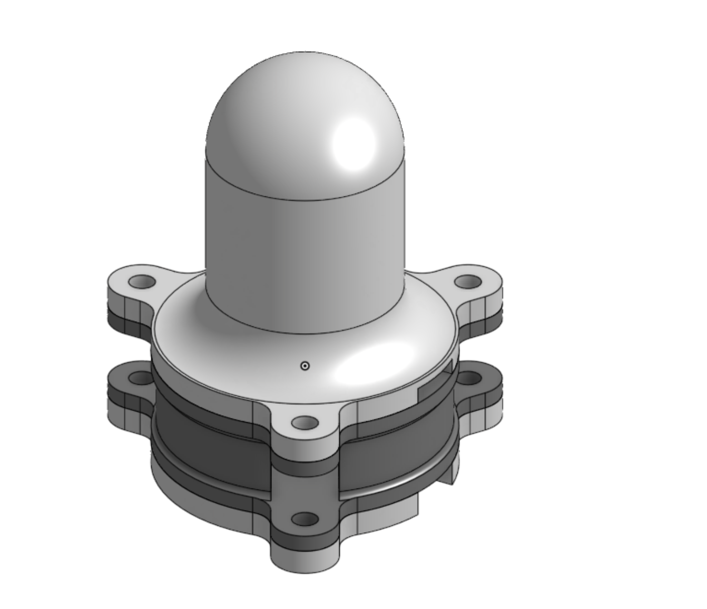
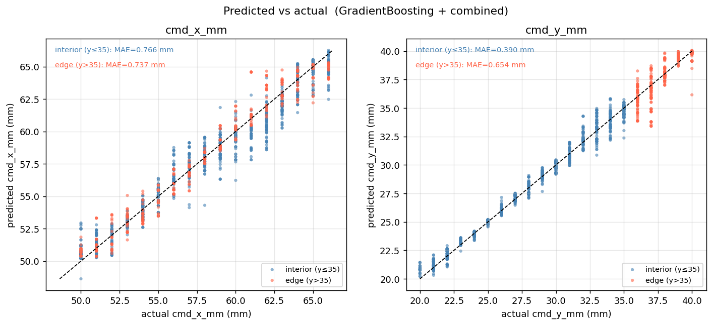
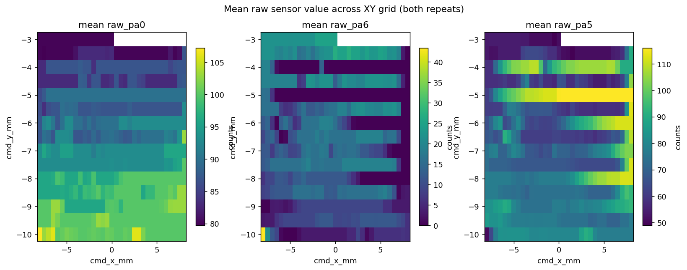
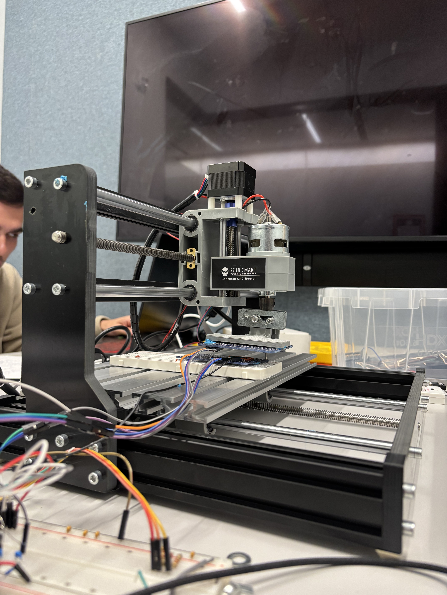

Characterizing a soft touch sensor and training machine-learning models to predict contact position, using a custom CNC plotter rig that collects ground-truth data automatically.

CAD model of the domed soft tactile sensor characterized in this work.
As part of Mark Yim's ModLab (the Modular Robotics Laboratory at Penn), I worked on turning a soft tactile sensor into something a robot could actually localize touch with. The challenge is that the raw multi-channel analog signals are noisy and non-linear in the contact position, so the mapping from sensor reading to (x, y) location has to be learned from data.
To gather enough labeled data, I built and tuned a custom Arduino-driven CNC plotter that presses the sensor at precisely commanded XY positions. An Arduino ADC samples the sensor's channels at each point, and the commanded coordinates serve as ground truth, yielding a clean, repeatable dataset across the whole sensor surface, including the harder-to-model edges.

The best model (gradient boosting on the combined feature set) predicted contact position to roughly sub-millimeter accuracy (interior mean absolute error of about 0.77 mm in X and 0.39 mm in Y), with edge regions, as expected, somewhat harder to localize.

Mean raw sensor value across the XY grid for several channels, revealing the spatial response of the sensor.

Driving the sensor with a CNC plotter (a repurposed SainSmart Genmitsu router under GRBL) makes the dataset clean and repeatable: each sample pairs the sensor's raw channel readings with a precisely commanded contact coordinate, which becomes the ground-truth label for the localization models.
Built the full rig: sensor mount, CNC plotter, and acquisition firmware
~0.4-0.8 mm position error from learned models
Quantified where and why the sensor is hardest to localize
Lab: Penn ModLab (Modular Robotics Lab)
PI: Prof. Mark Yim
Focus: Tactile sensing & ML localization
Role: Hardware rig + data & modeling